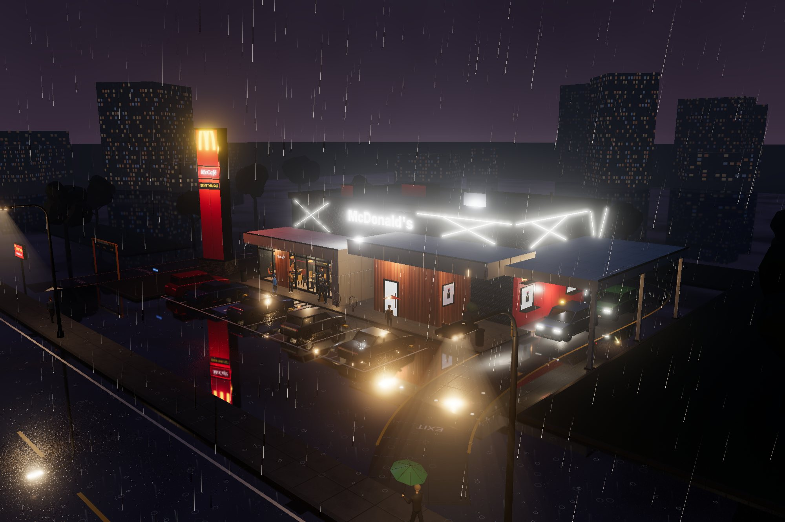
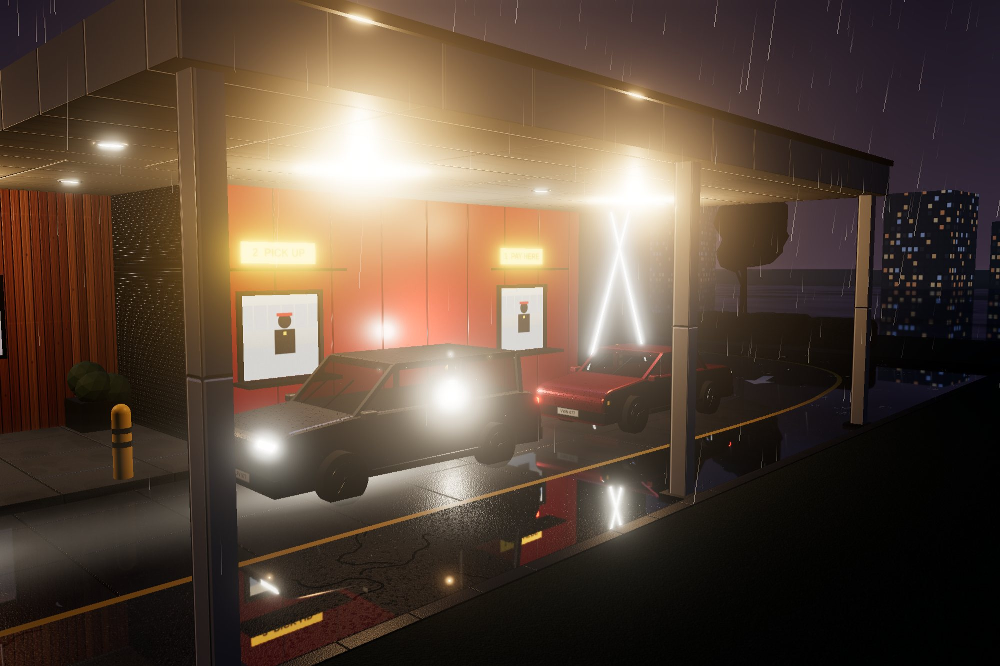
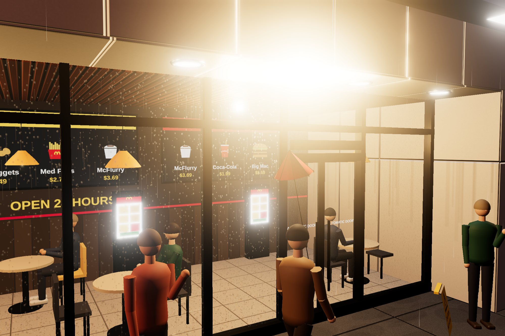

A drive-thru restaurant on a wet night, left running on its own. Cars queue round the building through
the order board and both windows, customers walk in from the car park under umbrellas, and the asphalt
doubles every sign. You do not drive anything: you watch, from nine camera positions, and the scene keeps
going.

Type
Concept · self-directed
Discipline
Real-time 3D · Web
Scene
Drive-thru, dining room, car park, street
Payload
No models, no image files
The brief
Most architectural visualisation shows a building at noon with nobody in it. A drive-thru is the
opposite kind of building: it is defined by what moves through it, and it is busiest at night, in
weather, when the signs are doing the work.
So the brief was a scene that runs rather than poses — a rainy night with the queue moving, people
coming and going and the wet ground doubling every light — in a single page, built from code, and
readable in English or Chinese at the press of a button.
Design decisions
The queue is simulated
Each car follows the lane as a spline, keeps its distance from the car ahead and brakes on a
curve it could actually stop in. It waits at the order board, the pay window and the pickup
window, and gives way to anyone crossing. Brake lights and indicators follow what the car is
doing; the wipers never stop.
Rain in one draw call
30,000 streaks are wrapped around the camera in the vertex shader, discarded under the
canopies and brightened by the eight nearest light sources, so the rain glows red by the
pylon and amber under the street lamps. Splashes, canopy drips and lightning are three more
small shaders.
Only code is downloaded
Asphalt, cladding, timber, stone, concrete, grass and glass are painted on canvas at load,
each with a normal map derived from its own height field. Signage is drawn the same way, so
switching language redraws every sign, menu board and number plate.
The numbers
Stops per car
Order board 4–7 s · pay window 2–3.5 s · pickup window 3.5–6 s
Car speed
5.2 m/s in the lane · 12 m/s on the road · 6.9 m nose to nose in the queue
Car types
Sedan, SUV, hatchback — extruded from side profiles, with alloy wheels and wipers
People
10 walking routes · 2 waiting under the canopy · 6 diners inside · 1.15–1.5 m/s
Rain
30,000 streaks over 90 × 90 m around the camera · 2,600 splashes
Building
24 × 14 m, 7.4 m to the parapet · canopies at 3.65 m and 4.6 m
Clearance bar
3.1 m, at the lane entrance
Camera presets
9, including the dining room and a chase camera behind the newest car
How it is built
The lane is one spline. Every stop, painted arrow, lane line and the concrete lane surface is placed
by distance along it, so moving a window moves its stop, its arrow and the point where cars brake.
The cars are three body profiles extruded across their width, with the glasshouse, pillars,
bumpers, lamps and plates added to the profile and merged once per car type.
The ground is a mirror under a layer of asphalt whose opacity is a puddle map: where the map is dark
you see the reflection, where it is light you see aggregate and cracks. The same map drives the
roughness, so the puddles are also where the highlights are sharpest. The building, the site and the
distant city are merged by material at load, so the static scene costs a few dozen draw calls rather
than thousands.

Two languages, one switch
The scene opens in English and switches to Chinese from the panel. Every piece of text in the world
is a canvas that knows how to redraw itself: the main sign, the pylon, the menu board and the
screens inside, the window signs, the clearance bar, the lettering on the lane, the wet-floor sign
and the number plates, which change from three letters and three digits to a blue provincial plate.
Prices change currency with the language.

What went wrong first
In the first version the dining room was a picture: the glazing carried a painted interior, and
customers vanished the moment they reached the door. Building the room for real — tables, pendant
lamps, kiosks, people eating — meant customers now had to get through the glass, so the door bay
became its own pair of sliding leaves that open when anyone comes within a couple of metres.
The headlight beams were open cones with a flat fade along their length. Seen from the side, the
walls of the cone showed as a pale slab with a hard edge. They now fade towards their silhouette
as well as along their length, so a beam reads as light in rain rather than as a sheet of glass,
and the street-lamp cones use the same shader.
Outcome
A scene that holds attention without a script: six to eight cars working through the lane,
customers walking in and out, nine camera presets and a live count of the queue, in a single page
with nothing to download beyond the code. It runs in a current desktop browser; on a phone you can
orbit and switch cameras.